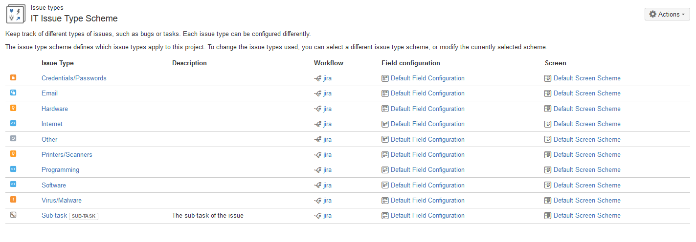

Open Beta Rollout
- The following projects have been enabled for use:
- BARM3
- PADNET
- MalariaCare
- GSF
- Executive
Base Issue Type Scheme Added
- In order to customize issue types from project to project as needed, it was necessary to create a "Base Issue Type Scheme" and associate it with all Business projects. - This will allow us to modify the issue types for each individual project if necessary.
- See the "How to edit default issue type scheme" thread on Atlassian Answers and !JIRATEK-13 for more information on the reasoning behind this change.
IT Project Key Change
- The IT project's key has been changed from (IT) to (ITHD) to fix an incoming mailer configuration string-match bug.
- The ITHD project has been wired to the ITHD.incoming endpoint.
Preparations for the Transition of MCDI IT Case Handling to JIRA
- The ITHD project has been wired to all notification services, with an additional default notification route targeting the help@mcd.org inbox. See !JIRATEK-16 for more information.
- The ITHD project has been moved to a custom Issue Type Scheme to provide proper functionality. See !JIRATEK-15 for more information.
The current configuration is shown below: 